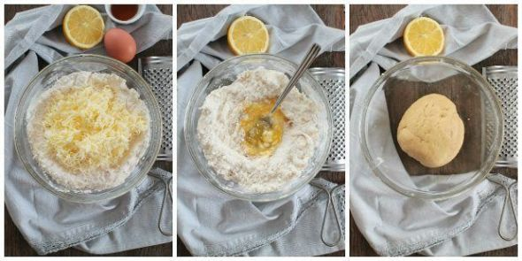
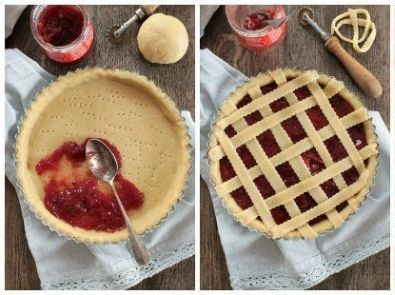
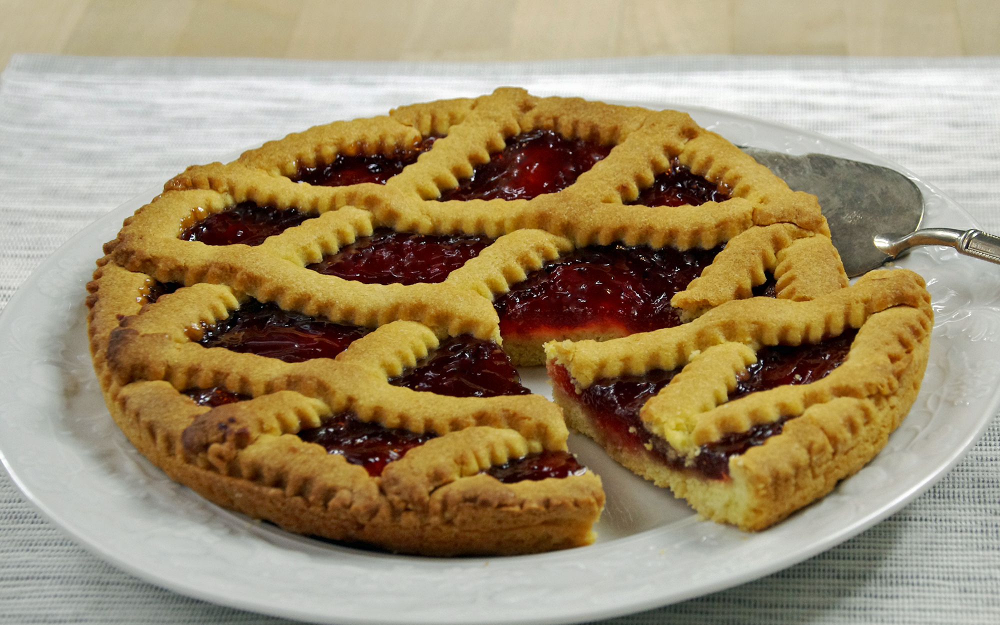

Crostata alla confettura di Fragole
Origini
la crostata potrebbe essere il dolce più antico della tradizione pasticcera italiana.
La sua storia non è facilmente databile, ma pare si possa ricondurre addirittura all’epoca precristiana.
Sebbene intorno alla storia della crostata aleggino diverse leggende, vedi il mito pagano della sirena Partenope che narra
come il dolce le sia stato regalato dagli dei in omaggio al suo canto soave, sembra che il merito dell’invenzione
di questa torta sia da attribuire ad una suora del convento di S. Gregorio Armeno.
Questo dolce di origine “povera” ebbe molta fortuna nel corso della storia, tanto da arrivare anche sulle tavole
dei nobili fino a raggiungere la corte dei Borboni.
Si narra infatti che fosse l’unico dolce in grado di far sorridere la regina Maria Teresa D’Austria,
moglie del re Ferdinando II di Borbone, soprannominata “la Regina che non sorride mai”.
Ricetta
| Difficoltà | Facile |
| Tempo di preparazione | 40 Minuti |
| Tempo di cottura | 30 Minuti |
| Porzioni | 1o Persone |
| Metodo di cottura | Forno |
| Cucina | Italiana |
Ingredienti
Quantità per 1 teglia da 22cm
Pasta Frolla
- 300g Farina 00
- 150g Zucchero
- 100g Burro freddo
- 1 cucchiaino di Lievito per dolci
- un pizzico di Sale
- 1 Uovo
- 1 Tuorlo d'uovo
Confettura di Fragole
Quantità per 3 barattoli di marmellata di fragole da 250/300 ml con tappo twist off
- 1kg e 1/2 di Fragole (peso al netto di scarti)
- 800g Zucchero
- 1 Limone grande + 1/2 di media dimensione (da cui ricavare succo e buccia)
Preparazione della Crostata alla confettura di Fragole
Confettura di Fragole
Pulitura Fragole
Lavate le fragole senza lasciarle a bagno, per evitare che assorbano troppa acqua.
Asciugatele con uno strofinaccio pulito, tamponando senza fare troppe pressioni.
Eliminate il ciuffo verde e tagliate ogni fragola in 2 o 4 parti

Marinatura di Fragole, Zucchero e Limone
Servitevi di un recipiente piuttosto capiente, aggiungetevi le fragole pulite e tagliate,
ricavate il succo di un limone e mezzo e filtratelo accuratamente con un passino a fori stretti.
Aggiungete alle fragole lo zucchero, il succo di limone e le bucce ricavate dei limoni premuti e precedentemente lavati.
Mescolate bene affinchè le fragole si condiscano.
Coprite la ciotola con una pellicola e lasciate in frigo per 1 giorno oppure per almeno 2 h.


Cottura Confettura
Trascorso il tempo che avete scelto per la marinatura, trasferite il composto di fragole, zucchero e limone in una pentola capiente, scartando da parte le bucce.
Se avete aspettato solo 2 h il composto non sarà cambiato molto. Al contrario se avete lasciato le fragole a marinare per 1 giorno, il composto risulterà decisamente più liquido e più profumato.
Ponete sul fuoco a fiamma moderata e lasciate bollire.
Dal momento dell’ebollizione, lasciate cuocere 30/ 40 minuti a fuoco basso, servendovi di una schiumarola da cucina per eliminare eventuale schiuma in eccesso che si formerà in fase di cottura.
Girate con un cucchiaio di legno costantemente. Piano piano il composto si rapprenderà, diminuendo anche un pò di volume.
Il risultato finale è una Composta fatta di succo gelatinoso e pezzi
A questo punto lasciate intiepidire 10 minuti girando di tanto in tanto il composto.
Procedete quindi a passare le fragole con un passino a fori medi. Quest’operazione è fondamentale per ottenere una marmellata uniforme.
A questo punto riponetela marmellata di fragole ormai intiepidita sul fuoco medio e lasciate cuocere a fiamma dolce per ancora 30 – 35 minuti, in questa seconda fase il composto produrrà pochissima schiuma ad ogni modo se necessario eliminatela.
Ottenuta la consistenza giusta, allontanate la pentola con la marmellata di fragole dal fuoco e continuate a girare.
Lasciate assestare un paio di minuti prima di procedere all’invasamento.


Invasamento Confettura
Sterilizzare i vasetti di vetro bollendoli in acqua per almeno 10 minuti e successivamente farli asciugare in forno per
circa 10 minuti a 180°.
Versare il composto ancora bollente nei vasetti appena sterilizzati e perfettamente asciutti.
Chiuderli con un tappo nuovo e capovolgerli per creare il vuoto. Lasciarli così fino a completo raffreddamento.


Pasta Frolla
Mescolate in una ciotola capiente la farina assieme al lievito, allo zucchero e al sale.
Quindi aggiungete il burro morbido a pezzetti piccoli oppure grattugiato e lavorate il tutto con la punta delle dita, fino ad ottenere un composto sabbioso.
Fate una conca al centro del composto e procedete aggiungendo l’uovo e il tuorlo. Impastate il tutto fino ad ottenere una pasta morbida ma non appiccicosa.
Prendete la pasta frolla, formateci una palla e avvolgetela nella pellicola trasparente alimentare.
Fatela riposare in frigorifero per almeno mezz’ora. Passato il tempo, riprendetela e mettetene da parte un terzo.

Assemblamento
Stendete i due terzi rimanenti su carta da forno fino ad ottenere un disco non troppo sottile (3/4 mm di spessore) e di circa 30 cm di diametro.
Sollevatelo con tutta la carta e deponetelo in una teglia rotonda di 24 cm di diametro e 3 cm di bordo.
Rivestite bene i bordi facendo sbordare eventualmente la pasta fuori dalla teglia.
Tagliate la pasta eccedente il bordo della teglia e aggiungetela a quella messa da parte in precedenza.
Bucherellate la base della crostata con una forchetta e spalmate la marmellata sul disco di pasta in maniera omogenea.
Stendete la pasta frolla rimasta e ricavatene, con il taglia pasta liscio o dentellato, delle strisce di circa 2 cm di larghezza.
Utilizzate queste strisce di pasta frolla per rifinire il bordo esterno della crostata e per formare la classica gratella centrale.
Cuocete la crostata alla marmellata in forno ventilato per 30 minuti a 180 °C.

Una volta che si sarà ben dorata in superficie, sfornatela e fatela intiepidire prima di toglierla dalla teglia.

Conservazione
La crostata si può conservare per circa 2 settimane sotto una campana di vetro a temperatura ambiente, in alternativa può essere congelata per circa 2 mesi.